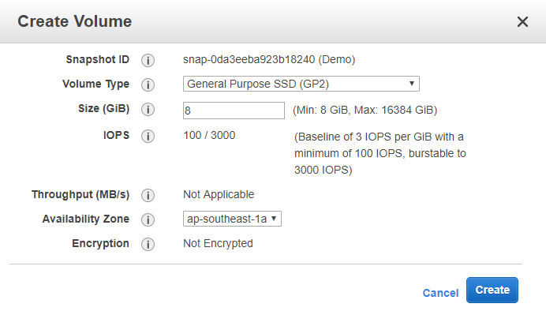
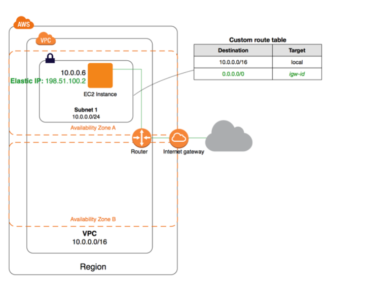
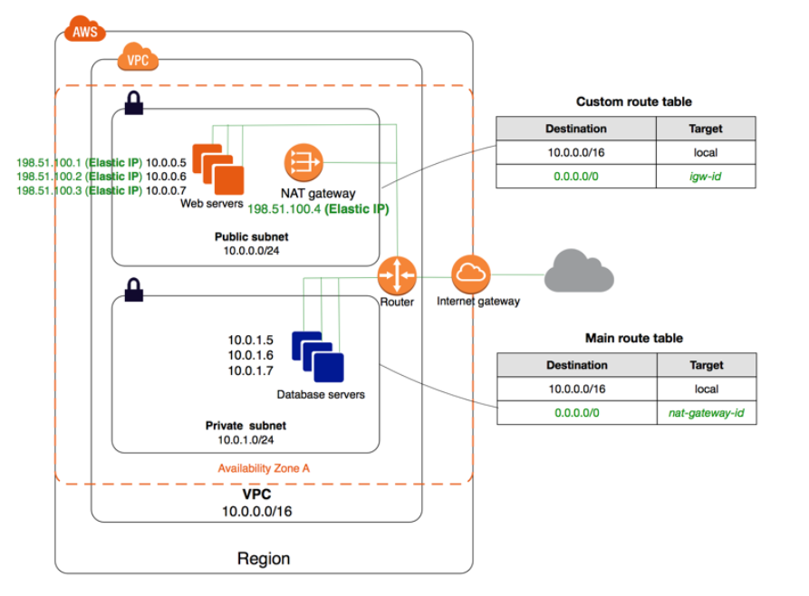
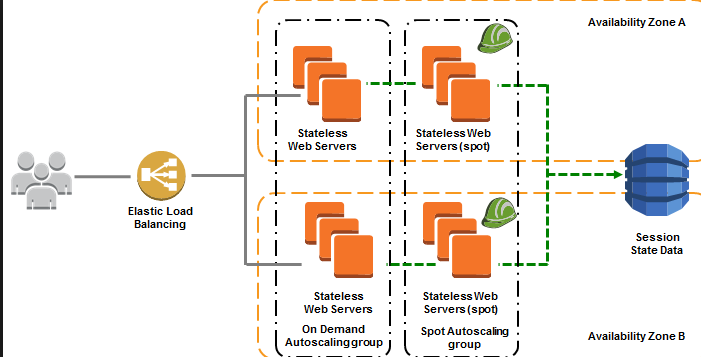
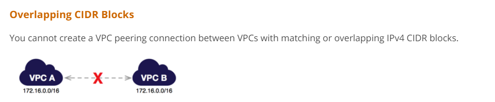
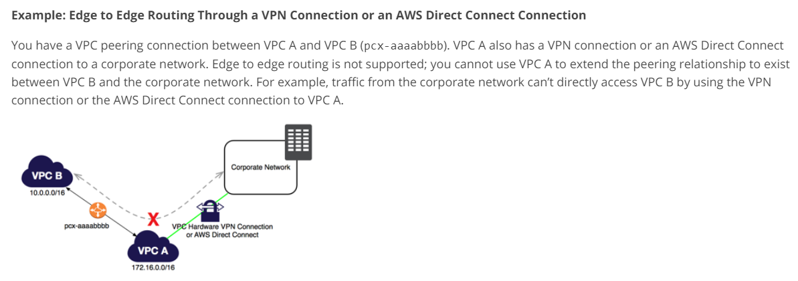
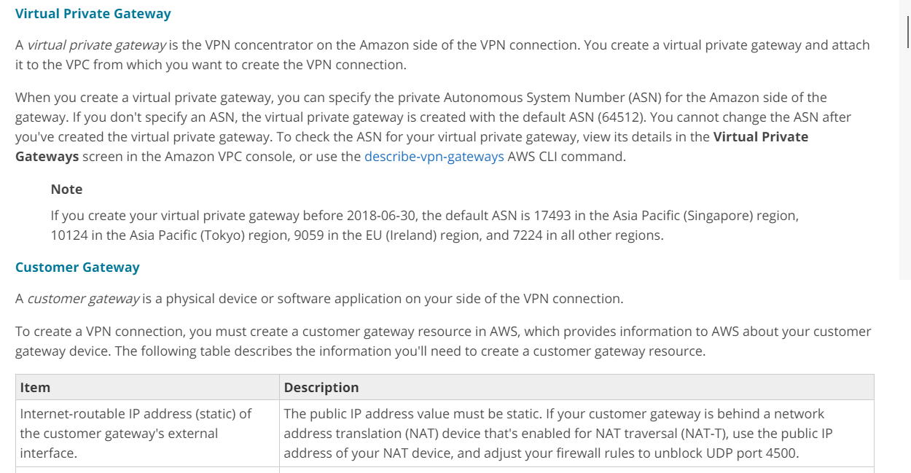
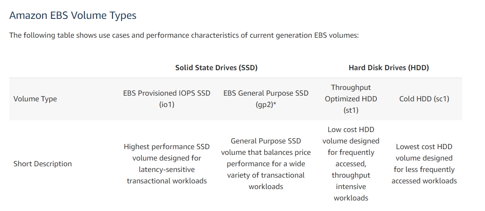
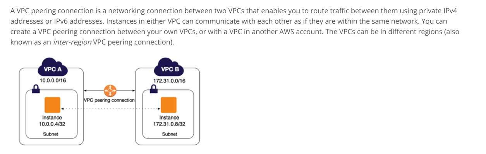

-

Attempt
22 -

Marks Obtained
0 / 65 -

Your score
0.0% -

Time Taken
00 H 00 M 29 S -

Result
Failed
| No | Domain | Total Question | Correct | Incorrect | Unattempted | Marked as Review |
|---|---|---|---|---|---|---|
|
|
|
|
|
|
|
|
|
|
|
|
|
|
|
|
|
|
|
|
|
|
|
|
|
|
|
|
|
|
|
|
|
|
|
|
|
|
|
|
|
|
|
|
|
|
|
|
Your company is planning on hosting a set of EC2 Instances in AWS. The Instances would be divided into subnets, one for the web tier and the other for the database tier. The web tier would be exposed to the Internet via the Internet gateway. What changes need to be done related to the EC2 instances so that the traffic can flow between the instances in each subnet?
Answer – B
The AWS Documentation mentions the following
A security group acts as a virtual firewall for your instance to control inbound and outbound traffic. When you launch an instance in a VPC, you can assign up to five security groups to the instance. Security groups act at the instance level, not the subnet level. Therefore, each instance in a subnet in your VPC could be assigned to a different set of security groups. If you don't specify a particular group at launch time, the instance is automatically assigned to the default security group for the VPC
- Option A is invalid since the route tables would already have the required rules to route traffic between subnets in a VPC
- Option C is invalid since the instances would communicate with each other on the private IP
- Option D is invalid since the database should be in the private subnet and not the public subnet
For more information on Security Groups, please visit the below URL:
Try now labs related to this question
-
Learn how to build Public and Private subnets from scratch.
-
VPC wizard will not be used. So every component required to build public and private subnets will be created and configured manually.
-
This will give an in-depth understanding of internal components of VPC and subnets.
- Credit Needed10
- Time 0 : 30
You work for a company that has a set of EC2 Instances. There is an internal requirement to create another instance in another availability zone. One of the EBS volumes from the current instance needs to be moved from one of the older instances to the new instance. How can you achieve this?
Answer – C
In order for a volume to be available in another availability zone, you need to first create a snapshot from the volume. Then in the snapshot from creating a volume from the snapshot , you can then specify the new availability zone accordingly.

Option A is invalid, because the Instance and Volume have to be in the same AZ in order for it to be attached to the instance
Option B is invalid , because there is no way to specify a volume as a source
Option D is invalid , because the Diskcopy would just be a tedious process.
For more information on snapshots, please visit the below URL
Try now labs related to this question
This lab walks you through the steps to create AMI from Amazon EC2 Instance. You will practice using Amazon Machine Images to launch Amazon EC2 Instance and Create AMI of that EC2 Instance.
- Credit Needed10
- Time 0 : 30
Your team has developed an application and now needs to deploy that application onto an EC2 Instance. This application interacts with a DynamoDB table. Which of the following is the correct and MOST SECURE way to ensure that the application interacts with the DynamoDB table
Answer – A
IAM roles are designed in such a way so that your applications can securely make API requests from your instances, without requiring you to manage the security credentials that the applications use.
Option B,C and D are invalid because it is not secure to use API credentials from any EC2 instance. The API credentials can be tampered with and hence is not the ideal secure way to make API calls.
For more information on IAM roles for EC2, please visit the below URL:
Try now labs related to this question
This lab walks you through the steps on how to create IAM Users, IAM Groups and adding IAM User to the IAM Group in AWS IAM service
- Credit Needed10
- Time 0 : 20
You are using Amazon RDS as a relational database for your web application in AWS. All your data stored in Amazon RDS is encrypted using AWS KMS. Encrypting this data is handled by a separate team of 4 users (User A, B, C, & D) in Security Team. They have created 2 CMK’s for encryption of data. During annual Audit, there were concerns raised by Auditors for access to these CMK’s for each user. Security Team has following IAM Policy & Key Policy set for AWS KMS.
· CMK1 is created by AWS KMS API & has a default Key policy.
· CMK2 is default key policy created by AWS Management console & allows User D.
· User C has IAM Policy denying all action for CMK1 while allowing for CMK2.
· User A & User B has IAM Policy allowing access to CMK1 while denying access to CMK2.
· User D has IAM policy allowing full access to AWS KMS.
Which of the following is correct statement for access each user has for AWS KMS CMK?
Correct Answer – A
Access to AWS KMS CMK is a combination of both Key policy & IAM policy. IAM Policy should grant access to a user for AWS KMS. While Key Policy is used to control access to CMK in AWS KMS.
- Option B is incorrect as CMK2 key policy do not grant access to User C. Also, User A & B do not have IAM policy to access CMK2.
- Option C is incorrect as CMK2 key policy do not grant access to User C. Also, it does not have IAM policy to access CMK1.
- Option D is incorrect as User D has IAM policy & Key Policy to use both CMK1 & CMK2.
For more information on determining access to AWS KMS CMK, refer to following URL,
Your company is big on building container-based applications. Currently they use Kubernetes for their on-premises docker based orchestration. They want to move to AWS and preferably not have to manage the infrastructure for the underlying orchestration service. Which of the following could be used for this purpose?
Answer – B
"Amazon ECS has two modes: Fargate launch type and EC2 launch type. With Fargate launch type, all you have to do is package your application in containers, specify the CPU and memory requirements, define networking and IAM policies, and launch the application."
- Option A is incorrect since this is a fully managed NoSQL database
- Option C is incorrect since this would add maintenance overhead for the company and the question mentions that the company does not want to manage the infrastructure
- Option D is incorrect since this is used to deploy applications but will not provide a managed orchestration service
- For more information on AWS ECS service, please visit the below URL:
Your company is looking at decreasing the amount of time it takes to build servers which are deployed as EC2 Instances. These Instances always have the same type of software installed as per the security standards. As an architect what would you recommend in decreasing the server build time.
Answer – C
The AWS Documentation mentions the following
An Amazon Machine Image (AMI) provides the information required to launch an instance, which is a virtual server in the cloud. You must specify a source AMI when you launch an instance. You can launch multiple instances from a single AMI when you need multiple instances with the same configuration. You can use different AMIs to launch instances when you need instances with different configurations.
Options A and B are incorrect since these cannot be used to create a master copy of the instance
Option D is incorrect because creating a profile will not assist
For more information on AMI’s, please visit the below URL:
Try now labs related to this question
This lab walks you through the steps to create AMI from Amazon EC2 Instance. You will practice using Amazon Machine Images to launch Amazon EC2 Instance and Create AMI of that EC2 Instance.
- Credit Needed10
- Time 0 : 30
You are working as an AWS Administrator for a global IT company. The development team has developed a new intranet application for project delivery using AWS serverless infrastructure in the US-West-2 region. Coding for this application is done using Python with code size less than 5 MB & changes in code is done on a quarterly basis. This new application will be set up on new redundant infrastructure and company would like to automate this process. For deploying new features, AWS Codepipeline will be used for an automated release cycle. What would you recommend as source stage and deploy stage integration along with AWS CodePipeline?
Correct Answer – B
As code size is less than 5MB with a smaller number of changes to the code, AWS CodeCommit can be used as source stage integration with AWS CodePipeline. Also, new infrastructure needs to be built for this new application deployment, AWS Elastic Beanstalk can be used to build & manage redundant resources.
- Option A is incorrect. There is no existing infrastructure. As a new resource needs to be deployed, AWS Code Deploy is not a correct option.
- Option C is incorrect. Code size is less than 5 MB with a smaller number of changes, so S3 would not be a correct option.
- Option D is incorrect. There is no existing infrastructure. As a new resource needs to be deployed, AWS Code Deploy is not a correct option. Also, code size is less than 5 MB with a smaller number of changes, S3 would not be a correct option.
For more information on AWS CodePipeline Integration type, refer to the following URL:
https://docs.aws.amazon.com/codepipeline/latest/userguide/integrations-action-type.html
You are designing the following application in AWS. Users will use the application to upload videos and images. The files will then be picked up by a worker process for further processing. Which of the below services should be used in the design of the application. Choose 2 answers from the options given below
Answer - A and D
The AWS Documentation mentions the following
Amazon Simple Storage Service is storage for the Internet. It is designed to make web-scale computing easier for developers.
Amazon Simple Queue Service (SQS) is a fully managed message queuing service that enables you to decouple and scale microservices, distributed systems, and serverless applications. SQS eliminates the complexity and overhead associated with managing and operating message oriented middleware, and empowers developers to focus on differentiating work. Using SQS, you can send, store, and receive messages between software components at any volume, without losing messages or requiring other services to be available.
Option B is incorrect since this is used for archive storage
Option C is incorrect since this is used as a notification service
For more information on S3, please visit the below URL:
For more information on SQS, please visit the below URL:
Try now labs related to this question
This lab walks you through to Amazon Simple Storage Service. Amazon S3 has a simple web services interface that you can use to store and retrieve any amount of data, at any time, from anywhere on the web. In this lab we will demonstrate AWS S3 by creating a sample S3 bucket, uploading an object to S3 bucket and setting up bucket permission and policy.
- Credit Needed10
- Time 0 : 30
Your development team has created a web application that needs to be tested on VPC. You need to advise the IT admin team on how they should implement the VPC to ensure the application can be accessed from the Internet. Which of the following components would be part of the design. Choose 3 answers from the options given below
Answer - A, C and D
The below diagram from the AWS Documentation shows the design of a public subnet

Option B is incorrect since this should be used for communication of instances in the private subnet to the Internet
For more information on public subnets and the VPC, please visit the below URL:
Try now labs related to this question
-
This lab walks you through the steps to launch and configure a virtual machine in the Amazon cloud.
-
You will practice using Amazon Machine Images to launch Amazon EC2 Instances and use key pairs for SSH authentication to log into your instance. You will create a web page and publish it.
- Credit Needed10
- Time 0 : 30
Your company is planning on deploying an application which will consist of a web and database tier. The database tier should not be accessible from the Internet. How would you design the networking part of the application? Choose 2 answers from the options below
Answer - A and D
The below diagram from the AWS Documentation shows the design of a web and database tier

Option B is incorrect since users will not be able to access the web application if it placed in a private subnet
Option C is incorrect since the question mentions that the database should not be accessible from the internet
For more information on private and public subnets and the VPC, please visit the below URL:
Try now labs related to this question
-
Learn how to build Public and Private subnets from scratch.
-
VPC wizard will not be used. So every component required to build public and private subnets will be created and configured manually.
-
This will give an in-depth understanding of internal components of VPC and subnets.
- Credit Needed10
- Time 0 : 30
You are creating a number of EBS Volumes for the EC2 Instances hosted in your company's AWS account. The company has asked you to ensure that the EBS volumes are available even in the event of a disaster. How would you accomplish this? Choose 2 answers from the options given below
Answer - B and D
The AWS Documentation mentions the following
You can back up the data on your Amazon EBS volumes to Amazon S3 by taking point-in-time snapshots. Snapshots are incrementalbackups, which means that only the blocks on the device that have changed after your most recent snapshot are saved. This minimizes the time required to create the snapshot and saves on storage costs by not duplicating data. When you delete a snapshot, only the data unique to that snapshot is removed. Each snapshot contains all of the information needed to restore your data (from the moment when the snapshot was taken) to a new EBS volume.
Option A is incorrect since you have to make use of EBS snapshots
Option C is incorrect since the snapshots need to be made available in another region for disaster recovery purposes.
For more information on EBS snapshots, please visit the below URL:
You are planning on hosting a static website on EC2 Instances. You need to ensure that the environment is highly available and scalable to meet demand. Which of the below aspects can be used to create a highly available environment. Choose 3 answers from the options given below.
Answer - A, B and D
The diagram below shows an example of a highly available architecture for hosting EC2 Instances

Here you have the
1) ELB is placed in front of the users which helps in directing the traffic to the EC2 Instances.
2) The EC2 Instances which are placed as part of an AutoScaling Group
3) And then you have multiple subnets which are mapped to multiple availability zones
For a static web site, the SQS is not required to build such an environment. If you have a system such as an order processing system, which has that sort of queuing of requests, then that could be a candidate for using SQS Queues.
For more information on high availability, please visit the below URL:
Try now labs related to this question
AWS Auto Scaling will automatically scale resources as needed to align to your selected scaling strategy, This lab walks you through to use Auto Scaling to automatically launch or terminate EC2’s instances based on user defined policies, schedules and health checks.
- Credit Needed10
- Time 0 : 55
A global media firm is using AWS CodePipeline as an automation service for releasing new features to customers. All the codes are uploaded in the Amazon S3 bucket. Changes in files stored in Amazon S3 bucket should trigger AWS Codepipeline that will further initiate AWS Elastic Beanstalk for deploying additional resources. What is the additional requirement that should be configured to trigger CodePipeline in a faster way?
Correct Answer – B
To automatically trigger pipeline with changes in the source S3 bucket, Amazon CloudWatch Events rule & AWS CloudTrail trail must be applied. When there is a change in S3 bucket, events are filtered using AWS CloudTrail & then Amazon CloudWatch events are used to trigger the start of pipeline. This default method is faster & periodic checks should be disabled to have events-based triggering of CodePipeline.
- Option A is incorrect as Webhooks are used to trigger pipeline when the source is GitHub repository. Also, the periodic check will be a slower process to trigger CodePipeline.
- Option C is incorrect as Periodic checks are not a faster way to trigger CodePipeline.
- Option D is incorrect as Webhooks are used to trigger pipeline when the source is GitHub repository.
For more information on Automatically Triggering Pipeline, refer to the following URL:
https://docs.aws.amazon.com/codepipeline/latest/userguide/pipelines-about-starting.html
You have a requirement to host a web based application. You need to enable high availability for the application, so you create an Elastic Load Balancer and place the EC2 Instances behind the Elastic Load Balancer. You need to ensure that users only access the application via the DNS name of the load balancer. How would you design the network part of the application? Choose 2 answers from the options below
Answer - A and D
The AWS Documentation mentions the following
You must create public subnets in the same Availability Zones as the private subnets that are used by your private instances. Then associate these public subnets to the internet-facing load balancer.
Option B is incorrect since the ELB needs to be placed in the public subnet to allow access from the Internet
Option C is incorrect based on security issues. Private subnet gives us the better security from the attacks.
For more information on an example to use the Load balancer , please visit the below URL:
Try now labs related to this question
This lab walks you through AWS Elastic Load Balancing. Elastic Load Balancing automatically distributes incoming application traffic across multiple Amazon EC2 instances in the cloud. In this lab, we will demonstrate elastic load balancing with 2 EC2 Instances.
- Credit Needed10
- Time 0 : 30
You are working as an AWS Architect for a retail company using AWS EC2 instance for a web application. Company is using Provisioned IOPS SSD EBS volumes to store all product database.
This is a critical database & you need to ensure appropriate backups are accomplished every 12 hours. Also, you need to ensure that storage space is optimally used for storing all these snapshots removing all older files. Which of the following can help to meet this requirement with least management overhead?
Correct Answer – C
Amazon Data Lifecycle Manager can be used for creation, retention & deletion of EBS snapshots. It protects critical data by initiating backup of Amazon EBS volumes at selected intervals , along with storing & deletion of old snapshots to save storage space & cost.
- Option A is incorrect as this will result in additional admin work & there can be risk of losing critical data due to manual errors.
- Option B is incorrect as for this we will need to additional config changes in CloudWatch & AWS Lambda.
- Option D is incorrect as this will result in additional cost to maintain a third-party software.
For more information on Automating Amazon EBS Snapshot Lifecycle, refer to following URL,
https://docs.aws.amazon.com/AWSEC2/latest/UserGuide/snapshot-lifecycle.html
You work as an architect for a consulting company. The consulting company normally creates the same set of resources for their clients. They want some way of building templates, which can then be used to deploy the resources to the AWS accounts for the various clients. Which of the following service can help fulfil this requirement?
Answer – C
The AWS Documentation mentions the following
AWS CloudFormation is a service that helps you model and set up your Amazon Web Services resources so that you can spend less time managing those resources and more time focusing on your applications that run in AWS. You create a template that describes all the AWS resources that you want (like Amazon EC2 instances or Amazon RDS DB instances), and AWS CloudFormation takes care of provisioning and configuring those resources for you.
Option A is invalid because this is good to get a certain set of defined resources up and running. But It cannot be used to duplicate infrastructure as code.
Option B is invalid because this is the Simple Queue Service which is used for sending messages.
Option D is invalid because this is the Simple Notification service that is used for sending notifications.
For more information on Cloudformation, please visit the below URL:
Try now labs related to this question
This lab walks you through to AWS CloudFormation features. In this lab, we will demonstrate the use AWS CloudFormation Stack in creating a simple LAMP Server.
- Credit Needed10
- Time 0 : 30
You work as an architect for a company. An application is going to be deployed on a set of EC2 instances in a private subnet of VPC. You need to ensure that IT administrators can securely administer the instances in the private subnet. How can you accomplish this?
Answer – D
The AWS Documentation mentions the following
A bastion host is a server whose purpose is to provide access to a private network from an external network, such as the Internet. Because of its exposure to potential attack, a bastion host must minimize the chances of penetration. For example, you can use a bastion host to mitigate the risk of allowing SSH connections from an external network to the Linux instances launched in a private subnet of your Amazon Virtual Private Cloud (VPC).
- Options A and B are invalid because you would not route access via the NAT instance or the NAT gateway
- Option C is incorrect since the bastion host needs to be in the public subnet
- For more information on bastion hosts please visit the below URL:
You work as an architect for a company. An application is going to be deployed on a set of EC2 instances in a VPC. The Instances will be hosting a web application. You need to design the security group to ensure that users have the ability to connect from the Internet via HTTPS. Which of the following needs to be configured for the security group
Answer – A
The AWS Documentation mentions the following
A security group acts as a virtual firewall for your instance to control inbound and outbound traffic. When you launch an instance in a VPC, you can assign up to five security groups to the instance. Security groups act at the instance level, not the subnet level. Therefore, each instance in a subnet in your VPC could be assigned to a different set of security groups. If you don't specify a particular group at launch time, the instance is automatically assigned to the default security group for the VPC.
- Option B is incorrect since security groups are stateful, you don’t need to define the rule for outbound traffic
- Options C and D are incorrect since you need to only ensure access for HTTPS , hence you should not configure rules for port 80
- For more information on security groups, please visit the below URL:
Try now labs related to this question
-
This lab walks you through the steps to launch and configure a virtual machine in the Amazon cloud.
-
You will practice using Amazon Machine Images to launch Amazon EC2 Instances and use key pairs for SSH authentication to log into your instance. You will create a web page and publish it.
- Credit Needed10
- Time 0 : 30
Your company runs an automobile reselling company that has a popular online store on AWS. The application sits behind an Auto Scaling group and requires new instances of the Auto Scaling group to identify their public and private IP addresses. Which of the following is the correct AWS option to identify the IP addresses?
Answer – C
To get the private and public IP addresses, you can run the following commands on the running instance
- http://169.254.169.254/latest/meta-data/local-ipv4
- http://169.254.169.254/latest/meta-data/public-ipv4
Option A is partially correct, but is an overhead when you already have the service running in AWS.
Option B is incorrect, because CloudTrail is used for tracking the API activities of a resource
Option D is incorrect, because user-data cannot get the IP addresses
For more information on instance metadata, please refer to the below URL:
Try now labs related to this question
AWS Auto Scaling will automatically scale resources as needed to align to your selected scaling strategy, This lab walks you through to use Auto Scaling to automatically launch or terminate EC2’s instances based on user defined policies, schedules and health checks.
- Credit Needed10
- Time 0 : 55
You have been designing a CloudFormation template that creates one elastic load balancer fronting two EC2 instances. Which section of the template should you edit so that the DNS of the load balancer is returned upon creation of the stack?
Answer – C
The below example shows a simple CloudFormation template. It creates an EC2 instance based on the AMI - ami-d6f32ab5. When the instance is created, it will output the AZ in which it is created.
{
"Resources": {
"MyEC2Instance": {
"Type": "AWS::EC2::Instance",
"Properties": {
"ImageId": "ami-d6f32ab5"
}
}
},
"Outputs": {
"Availability": {
"Description": "The Instance ID",
"Value":
{ "Fn::GetAtt" : [ "MyEC2Instance", "AvailabilityZone" ]}
}
}
}
- Option A is incorrect because this is used to define the main resources in the template
- Option B is incorrect because this is used to define parameters which can taken in during template deployment
- Option D is incorrect because this used to map key value pairs in a template
To understand more on CloudFormation, please visit the url
Try now labs related to this question
This lab walks you through to AWS CloudFormation features. In this lab, we will demonstrate the use AWS CloudFormation Stack in creating a simple LAMP Server.
- Credit Needed10
- Time 0 : 30
A company has a set of VPC's defined in AWS. They need to connect this to their on-premises network. They need to ensure that all data is encrypted in transit. Which of the following would you use to connect the VPC's to the on-premises networks?
Answer – B
The AWS Documentation mentions the following
By default, instances that you launch into an Amazon VPC can't communicate with your own (remote) network. You can enable access to your remote network from your VPC by attaching a virtual private gateway to the VPC, creating a custom route table, updating your security group rules, and creating an AWS managed VPN connection.
Option A is incorrect because this is used to connect multiple VPC’s together.
Option C is incorrect because this does not encrypt traffic in connections between AWS VPC’s and the On-premises network
Option D is incorrect because this is used for low latency access between EC2 Instances
For more information on AWS Managed VPN connections , please visit the below URL
A company wants to host a selection of MongoDB instances. They are expecting a high load and want to have as low latency as possible. As an architect, you need to ensure that the right storage is used to host the MongoDB database. Which of the following would you incorporate as the underlying storage layer?
Answer – A
The below snapshot from the AWS Documentation shows the different volume types and why Provisioned IOPS is the most ideal for this requirement

Because of what is mentioned in the documentation as the ideal storage type , the other options are invalid.
For more information on the different EBS volume types , please visit the below URL
A customer needs corporate IT governance and cost oversight of all AWS resources consumed by its divisions. Each division has their own AWS account and there is a need to ensure that the security policies are kept in place at the Organizational Level. How can you achieve this? Choose 2 answers from the options given below
Answer - A and D
With AWS Organizations, you can centrally manage policies across multiple AWS accounts without having to use custom scripts and manual processes. For example, you can apply service control policies (SCPs) across multiple AWS accounts that are members of an organization. SCPs allow you to define which AWS service APIs can and cannot be executed by AWS Identity and Access Management (IAM) entities (such as IAM users and roles) in your organization’s member AWS accounts. SCPs are created and applied from the master account, which is the AWS account that you used when you created your organization.
- Option B is incorrect since the question mentions that you need to use separate AWS accounts
- Option C is incorrect since you need to use service control policies."AWS IAM doesn't provide the facility to define access permissions to that minute level i.e., which AWS service APIs can and cannot be executed by IAM entities."
For more information on how to use service control policies, please visit the below URL
Your company has a set of EC2 Instances hosted on the AWS Cloud. As an architect you have been told to ensure that if the status of any of instances is related to a failure, then the instances are automatically restarted. How can you achieve this in the MOST efficient way possible?
Answer – A
Using Amazon CloudWatch alarm actions, you can create alarms that automatically stop, terminate, reboot, or recover your EC2 instances. You can use the stop or terminate actions to help you save money when you no longer need an instance to be running. You can use the reboot and recover actions to automatically reboot those instances or recover them onto new hardware if a system impairment occurs.
All other options are possible , but would just be an extra maintenance overhead
For more information on using alarm actions, please refer to the below link
You are working for a financial institute using AWS cloud infrastructure. All project related data is uploaded to Amazon EFS. This data is retrieved from on-premises data centre connecting to VPC via AWS Direct Connect. You need to ensure that all client access to EFS is encrypted using TLS 1.2 to adhere to latest security guidelines issued by security team. Which of the following is cost effective recommended practice for securing data in transit while accessing data from Amazon EFS?
Correct Answer – A
While mounting Amazon EFS, if encryption of data in transit is enabled, EFS Mount helper initialise client Stunnel process to encrypt data in transit. EFS Mount helper uses TLS 1.2 to encrypts data in transit.
- Option B is incorrect as using stunnel for encryption of data in transit will work fine, but there would be additional admin work to download & install stunnel for each mount.
- Option C is incorrect as using third-party tool will be a costly option.
- Option D is incorrect as NFS client can’t be used to encrypt data in transit. The amazon-efs-utils package can be used which consist of EFS mount helper.
For more information on encrypting of data in transit for EFS, refer to following URL,
https://docs.aws.amazon.com/efs/latest/ug/encryption.html#encryption-in-transit
Your company has a set of resources defined in AWS. These resources consist of applications hosted on EC2 Instances. Data is stored on EBS volumes and S3. The company mandates that all data should be encrypted at rest. How can you achieve this? Choose 2 answers from the options below
Answer - B and D
The AWS Documentation mentions the following
Amazon EBS encryption offers a simple encryption solution for your EBS volumes without the need to build, maintain, and secure your own key management infrastructure.
Server-side encryption protects data at rest. Server-side encryption with Amazon S3-managed encryption keys (SSE-S3) uses strong multi-factor encryption.
Options A and C are incorrect since these have to do with encryption of data in transit and not encryption of data at rest
For more information on EBS Encryption, please refer to the below link
For more information on S3 server-side encryption, please refer to the below link
Your company has a web application hosted in AWS that makes use of an Application Load Balancer. You need to ensure that the web application is protected from web-based attacks such as cross site scripting etc.
Which of the following implementation steps can help protect web applications from common security threats from the outside world?
Answer – B
The AWS Documentation mentions the following
AWS WAF is a web application firewall that helps protect your web applications from common web exploits that could affect application availability, compromise security, or consume excessive resources. AWS WAF gives you control over which traffic to allow or block to your web applications by defining customizable web security rules. You can use AWS WAF to create custom rules that block common attack patterns, such as SQL injection or cross-site scripting, and rules that are designed for your specific application.
Options A and C are incorrect because these are used to allow instances in your private subnet to communicate with the internet
Option D is incorrect since this is ideal for content distribution and good when you have DDos attacks , but the WAF should be used for concentrated types of web attacks
For more information on AWS WAF, please refer to the below link
Your supervisor asks you to create a decoupled application whose process includes dependencies on EC2 instances and servers located in your company’s on-premises data center. Which of the following would you include in the architecture?
Answer – A
The AWS Documentation mentions the following
Amazon Simple Queue Service (SQS) is a fully managed message queuing service that enables you to decouple and scale microservices, distributed systems, and serverless applications. SQS eliminates the complexity and overhead associated with managing and operating message oriented middleware, and empowers developers to focus on differentiating work. Using SQS, you can send, store, and receive messages between software components at any volume, without losing messages or requiring other services to be available.
Option B is incorrect since this is a notification service
Option C is incorrect since there is no mention in the question on adding any fault tolerance
Option D is incorrect since there is no mention in the question on adding any failure detection
For more information on AWS SQS, please refer to the below link
Your company has a set of VPC's. There is now a requirement to establish communication across the Instances in the VPC's. Your supervisor has asked you to implement the VPC peering connection. Which of the following considerations would you keep in mind for VPC peering. Choose 2 answers from the options below
Answer - A and B
The AWS Documentation mentions the following with restrictions for VPC peering
Overlapping CIDR Blocks
You cannot create a VPC peering connection between VPCs with matching or overlapping IPv4 CIDR blocks.

Example: Edge to Edge Routing Through a VPN Connection or an AWS Direct Connect Connection
You have a VPC peering connection between VPC A and VPC B (pcx-aaaabbbb). VPC A also has a VPN connection or an AWS Direct Connect connection to a corporate network. Edge to edge routing is not supported; you cannot use VPC A to extend the peering relationship to exist between VPC B and the corporate network. For example, traffic from the corporate network can’t directly access VPC B by using the VPN connection or the AWS Direct Connect connection to VPC A.

Option C is incorrect since it is not necessary that the VPC's only contain public subnets
Option D is incorrect since it is not necessary that the VPC's are created in the same region
For more information on Invalid peering configurations, please refer to the below link
Note: AWS now supports VPC Peering across different regions. Please check below AWS Docs for more details:
- https://aws.amazon.com/about-aws/whats-new/2017/11/announcing-support-for-inter-region-vpc-peering/
- https://docs.aws.amazon.com/vpc/latest/peering/what-is-vpc-peering.html
You have been instructed to establish a successful site-to-site VPN connection from your on-premises network to the VPC (Virtual Private Cloud). As an architect , which of the following pre-requisites should you ensure are in place for establishing the site-to-site VPN connection. Choose 2 answers from the options given below
Answer - B and C
This is mentioned in the AWS Documentation

Option A is incorrect since NAT instance is not required to route traffic via the VPN connection
Option D is incorrect the Virtual Private Gateway is managed by AWS
For more information on VPN connections, please refer to the below link
Your company wants to enable encryption of services such as S3 and EBS volumes so that the data it maintains is encrypted at rest. They want to have complete control over the keys ( including hardware ) and the entire lifecycle around the keys. How can you accomplish this?
Answer – A
This is mentioned in the AWS Documentation
AWS CloudHSM is a cloud-based hardware security module (HSM) that enables you to easily generate and use your own encryption keys on the AWS Cloud. With CloudHSM, you can manage your own encryption keys using FIPS 140-2 Level 3 validated HSMs
- Options B,C and D are incorrect since here the keys are maintained by AWS
- For more information on cloud HSM, please refer to the below link
A company wants to implement a data store in AWS. The data store needs to have the following requirements
1) Completely managed by AWS
2) Ability to store JSON objects efficiently
3) Scale based on demand
Which of the following would you use as the data store?
Answer – B
Amazon DynamoDB is a fully managed NoSQL database service that provides fast and predictable performance with seamless scalability. DynamoDB lets you offload the administrative burdens of operating and scaling a distributed database, so that you don't have to worry about hardware provisioning, setup and configuration, replication, software patching, or cluster scaling. It is ideal for storing JSON based objects
Option A is incorrect since this is normally used to host a data warehousing solution
Option C is incorrect since this is used to host a MySQL database
Option D is incorrect since this is used for archive storage
For more information on DynamoDB, please refer to the below link
Try now labs related to this question
This lab walks you through to Amazon DynamoDB features. In this lab, we will create a table in Amazon DynamoDB to store information and then query that information from the DynamoDB table.
- Credit Needed10
- Time 0 : 30
A company has setup some EC2 Instances in a VPC with the default Security group and NACL settings. They want to ensure that IT admin staff can connect to the EC2 Instance via SSH. As an architect what would you ask the IT admin team to do to ensure that they can connect to the EC2 Instance from the Internet. Choose 2 answers from the options below
Answer - A and C
The AWS Documentation mentions the following
To enable access to or from the internet for instances in a VPC subnet, you must do the following:
- Attach an internet gateway to your VPC.
- Ensure that your subnet's route table points to the internet gateway.
- Ensure that instances in your subnet have a globally unique IP address (public IPv4 address, Elastic IP address, or IPv6 address).
Option B is incorrect since the Private IP will always be created, and would not be used to connect from the internet
Option D is incorrect since the default NACL rules will allow all traffic
For more information on exposing VPC resources to the Internet please refer to the below link
Your company has a set of EBS volumes and a set of adjoining EBS snapshots. They want to minimize the costs for the underlying EBS snapshots. Which of the following approaches provides the lowest cost for Amazon Elastic Block Store snapshots while giving you the ability to fully restore data?
Answer – C
The AWS Documentation mentions the following
You can back up the data on your Amazon EBS volumes to Amazon S3 by taking point-in-time snapshots. Snapshots are incrementalbackups, which means that only the blocks on the device that have changed after your most recent snapshot are saved. This minimizes the time required to create the snapshot and saves on storage costs by not duplicating data. When you delete a snapshot, only the data unique to that snapshot is removed. Each snapshot contains all of the information needed to restore your data (from the moment when the snapshot was taken) to a new EBS volume.
- For more information on EBS Snapshots, please refer to the below link
You are using an m1.small EC2 Instance with one 300GB EBS General purpose SSD volume to host a relational database. You determined that write throughput to the database needs to be increased. Which of the following approaches can help achieve this? Choose 2 answers from the options given below
Answer - A and C
The below snapshot from the AWS Documentation shows the different volume types and why Provisioned IOPS is the most ideal for this requirement

Also consider using a larger instance size for better processing capabilities
Option B is incorrect since the Multi-AZ feature is only for high availability
Option D is incorrect since this would not alleviate the high number of writes to the database
For more information on the different EBS volume types , please visit the below URL
Your company has a set of AWS RDS Instances. Your management has asked you to disable Automated backups to save on cost. When you disable automated backups for AWS RDS, what are you compromising on?
Answer – B
Amazon RDS creates a storage volume snapshot of your DB instance, backing up the entire DB instance and not just individual databases. You can set the backup retention period when you create a DB instance. If you don't set the backup retention period, Amazon RDS uses a default period retention period of one day. You can modify the backup retention period; valid values are 0 (for no backup retention) to a maximum of 35 days
You will also specifically see AWS mentioning the risk of not allowing automated backups.
Important
We highly discourage disabling automated backups because it disables point-in-time recovery.If you disable and then re-enable automated backups, you are only able to restore starting from the time you re-enabled automated backups.
Because of the risk which is clearly mentioned in the AWS Documentation, all other options are incorrect.
For more information on Automated backups, please visit
A company is planning on setting up a web-based application. They need to ensure that users across the world have the ability to view the pages from the web site with the least amount of latency. How can you accomplish this?
Answer – B
The AWS Documentation mentions the following
Amazon CloudFront is a global content delivery network (CDN) service that securely delivers data, videos, applications, and APIs to your viewers with low latency and high transfer speeds. CloudFront is integrated with AWS – including physical locations that are directly connected to the AWS global infrastructure, as well as software that works seamlessly with services including AWS Shield for DDoS mitigation, Amazon S3, Elastic Load Balancing or Amazon EC2 as origins for your applications, and Lambda@Edge to run custom code close to your viewers.
- Option A is incorrect since this is used for latency-based routing between the sites
- Option C is incorrect since this is used for fault tolerance for the web application
- Option D is incorrect since this is used for caching requests in front of a database layer
- For more information on AWS CloudFront, please visit
A customer is hosting their company website on a cluster of web servers that are behind a public-facing load balancer. The customer also uses Amazon Route 53 to manage their public DNS. How should Route 53 be configured to ensure the custom domain is made to point to the load balancer? Choose 2 answers from the options below.
Answer - C and D
The AWS Documentation mentions the following
While ordinary Amazon Route 53 records are standard DNS records, alias records provide a Route 53–specific extension to DNS functionality. Instead of an IP address or a domain name, an alias record contains a pointer to an AWS resource such as a CloudFront distribution or an Amazon S3 bucket. When Route 53 receives a DNS query that matches the name and type in an alias record, Route 53 follows the pointer and responds with the applicable value:
- An alternate domain name for a CloudFront distribution – Route 53 responds as if the query had asked for the CloudFront distribution by using the CloudFront domain name, such as d111111abcdef8.cloudfront.net.
- An Elastic Beanstalk environment – Route 53 responds to each query with one or more IP addresses for the environment.
- An ELB load balancer – Route 53 responds to each query with one or more IP addresses for the load balancer.
- An Amazon S3 bucket that is configured as a static website – Route 53 responds to each query with one IP address for the Amazon S3 bucket.
- Option D is correct. Hosted Zone - is a container for records, and records contain information about how you want to route traffic for a specific domain, such as example.com, and its subdomains (vpc.example.com, elb.example.com). A hosted zone and the corresponding domain have the same name, and we have 2 types of hosted zones;
- Public Hosted Zone - contain records that specify how you want to route traffic on the internet.
- Private Hosted Zone - contain records that specify how you want to route traffic in an Amazon VPC.
- Options A and B are incorrect since you need to use ALIAS names for this.
For more information on ALIAS records, please visit
A customer is hosting their company website on a cluster of web servers that are behind a public-facing load balancer. The web application interfaces with a AWS RDS database. It has been noticed that a set of similar types of queries is causing a performance bottleneck at the database layer. Which of the following architecture additions can help alleviate this issue?
Answer – B
The AWS Documentation mentions the following
Amazon ElastiCache offers fully managed Redis and Memcached. Seamlessly deploy, operate, and scale popular open source compatible in-memory data stores. Build data-intensive apps or improve the performance of your existing apps by retrieving data from high throughput and low latency in-memory data stores
Option A is incorrect since the database is having issues hence you need to ensure that ElastiCache is placed in front of the database servers
Option C is incorrect since there is an issue with the database servers, so we don’t need to add anything for the web servers
Option D is incorrect since this is used for high availability of the database
For more information on ElastiCache, please visit
Try now labs related to this question
This lab walks you through AWS Elastic Load Balancing. Elastic Load Balancing automatically distributes incoming application traffic across multiple Amazon EC2 instances in the cloud. In this lab, we will demonstrate elastic load balancing with 2 EC2 Instances.
- Credit Needed10
- Time 0 : 30
A customer is hosting their company website on a cluster of web servers that are behind a public-facing load balancer. The web application interfaces with a AWS RDS database. The management has specified that the database needs to be available in case of a hardware failure on the primary database. The secondary needs to be made available in the least amount of time. Which of the following would you opt for?
Answer – B
The AWS Documentation mentions the following
Amazon RDS Multi-AZ deployments provide enhanced availability and durability for Database (DB) Instances, making them a natural fit for production database workloads. When you provision a Multi-AZ DB Instance, Amazon RDS automatically creates a primary DB Instance and synchronously replicates the data to a standby instance in a different Availability Zone (AZ). Each AZ runs on its own physically distinct, independent infrastructure, and is engineered to be highly reliable. In case of an infrastructure failure, Amazon RDS performs an automatic failover to the standby (or to a read replica in the case of Amazon Aurora), so that you can resume database operations as soon as the failover is complete.
Options A and D are incorrect since even though they can be used to recover a database, it would just take more time than just enabling Multi-AZ
Option C is incorrect since this will not help the cause
For more information on Multi-AZ, please visit
Your company is planning on launching a set of EC2 Instances for hosting their production-based web application. As an architect you have to instruct the operations department on which service they can use for the monitoring purposes. Which of the following would you recommend?
Answer – B
The AWS Documentation mentions the following
Amazon CloudWatch is a monitoring and management service built for developers, system operators, site reliability engineers (SRE), and IT managers. CloudWatch provides you with data and actionable insights to monitor your applications, understand and respond to system-wide performance changes, optimize resource utilization, and get a unified view of operational health. CloudWatch collects monitoring and operational data in the form of logs, metrics, and events, providing you with a unified view of AWS resources, applications and services that run on AWS, and on-premises servers.
Option A is incorrect since this is used for API monitoring
Option C is incorrect since this is used to working with messages in the queue
Option D is incorrect since this is used for sending notifications
For more information on AWS Cloudwatch, please visit the below URL
Try now labs related to this question
This lab walks you through the various CloudWatch features available which are used for resource monitoring.
- Credit Needed10
- Time 0 : 45
A company is planning on storing their files from their on-premises location onto the Simple Storage service. After a period of 3 months, they want to archive the files, since they would be rarely used. Which of the following would be the right way to service this requirement?
Answer – B
The AWS Documentation mentions the following
To manage your objects so that they are stored cost effectively throughout their lifecycle, configure their lifecycle. A lifecycle configuration is a set of rules that define actions that Amazon S3 applies to a group of objects. There are two types of actions:
- Transition actions—Define when objects transition to another storage class. For example, you might choose to transition objects to the STANDARD_IA storage class 30 days after you created them, or archive objects to the GLACIER storage class one year after creating them.
- Expiration actions—Define when objects expire. Amazon S3 deletes expired objects on your behalf.
Options A and D are incorrect since using EBS volumes is not the right storage option for this sort of requirement
Option C is incorrect since the files should be initially stored in S3.
For more information on AWS S3 Lifecycle policies, please visit the below URL
Try now labs related to this question
This lab walks you through to the steps how to Enables Versioning to a AWS S3 Bucket. Versioning enables you to keep multiple versions of an object in one bucket. In this lab we learn how to enable object versioning on a S3 bucket.
- Credit Needed10
- Time 0 : 30
A company has a workflow that sends video files from their on-premises system to AWS for transcoding. They use EC2 worker instances that pull transcoding jobs from SQS. As an architect you need to design how the SQS service would be used in this architecture. Which of the following is the ideal way in which the SQS service should be used?
Answer – D
The AWS Documentation mentions the following
Amazon Simple Queue Service (Amazon SQS) offers a secure, durable, and available hosted queue that lets you integrate and decouple distributed software systems and components.
- Option A is incorrect since there is no mention in the question for the order of the messages to be guaranteed
- Options B and C are incorrect since these are not the responsibility of the SQS queue
For more information on AWS SQS queues, please visit the below URL
You're an architect for your company. Your IT admin staff needs access to newly created EC2 Instances for administrative purposes. Which of the following needs to be done to ensure that the IT admin staff can successfully connect via port 22 on to the EC2 Instances
Answer - D
A security group acts as a virtual firewall that controls the traffic for one or more instances. When you launch an instance, you associate one or more security groups with the instance. You add rules to each security group that allow traffic to or from its associated instances.
For connecting via SSH on EC2, you need to ensure that port 22 is open on the security group for the EC2 instance.
Option A is wrong, because port 443 is for HTTPS and not for SSH.
Option B is wrong because IAM role is not pertinent to security groups
Option C is wrong because this is relevant to ICMP and not SSH
Option E is wrong because it does not matter what patches are there on the system
For more information on EC2 Security groups, please visit the url
Try now labs related to this question
-
This lab walks you through the steps to launch and configure a virtual machine in the Amazon cloud.
-
You will practice using Amazon Machine Images to launch Amazon EC2 Instances and use key pairs for SSH authentication to log into your instance. You will create a web page and publish it.
- Credit Needed10
- Time 0 : 30
Your company is running a photo sharing website. Currently all the photos are stored in S3. At some point the company finds out that other sites have been linking to the photos on your site, causing loss to your business. You need to implement a solution for the company to mitigate this issue. Which of the following would you look at implementing?
Answer - A
The AWS Documentation mentions the following
A pre-signed URL gives you access to the object identified in the URL, provided that the creator of the pre-signed URL has permissions to access that object. That is, if you receive a pre-signed URL to upload an object, you can upload the object only if the creator of the pre-signed URL has the necessary permissions to upload that object.
Option B is incorrect since Cloud front is only used for distribution of content across edge or region locations. It is not used for restricting access to content
Option C is incorrect since Blocking IP’s is challenging because they are dynamic in nature and you will not know which sites are accessing your main site
Option D is incorrect since Storing photos on EBS volume is not a good practice or architecture approach for an AWS Solution Architect
For more information on serving private content please visit the url
You have been hired as a consultant for a company to implement their CI/CD processes. They currently use an on-premises deployment of Chef for their configuration management on servers. You need to advise them on what they can use on AWS to leverage their existing capabilities. Which of the following service would you recommend?
Answer – D
The AWS Documentation mentions the following
AWS OpsWorks is a configuration management service that provides managed instances of Chef and Puppet. Chef and Puppet are automation platforms that allow you to use code to automate the configurations of your servers. OpsWorks lets you use Chef and Puppet to automate how servers are configured, deployed, and managed across your Amazon EC2 instances or on-premises compute environments. OpsWorks has three offerings, AWS Opsworks for Chef Automate, AWS OpsWorks for Puppet Enterprise, and AWS OpsWorks Stacks.
All of the other options are incorrect since the only tool which works effectively with the Chef Configuration management tool is AWS OpsWorks.
For more information on AWS Opswork, please visit the url
You are working as an AWS consultant for a banking institute. They have deployed a digital wallet platform for clients using multiple EC2 instances in us-east-1 region. Application establishes a secure encrypted connection between clients & EC2 instance for each transaction using custom TCP port 5810.
Due to increasing popularity of this digital wallet, they are observing load on backend servers resulting in delay in transaction. For security purpose, all client IP address accessing this application should be preserved & logged. Technical team of banking institute is looking for a solution which will address this delay & also proposed solution should be compatible with millions of transactions done simultaneously. Which of the following is a recommended option to meet this requirement?
Correct Answer – B
Network Load Balancer can be used to terminate TLS connections instead of back end instance reducing load on this instance. With Network Load Balancers, millions of simultaneous sessions can be established with no impact on latency along with preserving client IP address. To negotiate TLS connections with clients, NLB uses a security policy which consists of protocols & ciphers.
- Option A is incorrect as Network Load Balancers does not support custom security policy
- Option C is incorrect as Network Load Balancers should consist of security policies comprising of Protocols & Ciphers.
- Option D is incorrect as Network Load Balancers does not support custom security policy as well as security policies should comprise of protocols & ciphers.
For more information on Security Policies for TLS termination on Network Load Balancers, refer to following URL,
https://docs.aws.amazon.com/elasticloadbalancing/latest/network/create-tls-listener.html
You work as an architect for a company. There is a requirement for an application to be deployed on a set of EC2 Instances. These would be part of a compute cluster that requires low inter-node latency. Which of the following would you use for this requirement?
Answer – D
The AWS Documentation mentions the following
Cluster placement groups are recommended for applications that benefit from low network latency, high network throughput, or both, and if the majority of the network traffic is between the instances in the group. To provide the lowest latency and the highest packet-per-second network performance for your placement group, choose an instance type that supports enhanced networking
Because of what is mentioned in the documentation , all other options are incorrect
For more information on AWS placement groups, please visit the url
Your company stores a large set of files in Amazon S3. They need to ensure that if any new files are added to an S3 bucket, an event notification would be sent to the IT admin staff. Which of the following could be used to fulfil this requirement? Choose 2 answers from the options given below.
Answer - A and C
The AWS Documentation mentions the following
The Amazon S3 notification feature enables you to receive notifications when certain events happen in your bucket. To enable notifications, you must first add a notification configuration identifying the events you want Amazon S3 to publish, and the destinations where you want Amazon S3 to send the event notifications.
Option B is incorrect since you need to create an SNS topic that could be used to send an email to multiple IT administrators
Option D is incorrect since the event notification needs to be placed on the bucket and not the object
NOTE:
Options C and D are different.
Option C: Add an event notification to the S3 bucket
Option D: Add an event notification to the S3 object
For more information on AWS S3 notifications, please visit the url
Try now labs related to this question
This lab walks you through the creation and subscription of an Amazon SNS Topic. Using AWS S3 bucket you will test the subscription.
- Credit Needed10
- Time 0 : 30
Your company is planning on migrating code written in C# from their on-premises infrastructure onto AWS. They want to ensure to limit the amount of maintenance that would be required for the underlying infrastructure. Which of the following would they choose for hosting the code base?
Answer – A
The AWS Documentation mentions the following
AWS Lambda is a compute service that lets you run code without provisioning or managing servers. AWS Lambda executes your code only when needed and scales automatically, from a few requests per day to thousands per second. You pay only for the compute time you consume - there is no charge when your code is not running. With AWS Lambda, you can run code for virtually any type of application or backend service - all with zero administration
Option B is incorrect since here you would need to manage the underlying servers
Option C is incorrect since there is no mention of docker containers or the requirement for an orchestration service
Option D is incorrect since this is a messaging service
For more information on AWS Lambda, please visit the url
Try now labs related to this question
This lab walks you through creation and usage of AWS Serverless service called AWS Lambda. In this lab, we will create a sample lambda function which is triggered on S3 Object upload event and makes a copy of that object on another S3 Bucket.
- Credit Needed10
- Time 0 : 30
A company has an AWS account that contains three VPCs (Dev, Test, and Prod) in the same region. There is a requirement to ensure that instances in the Development and Test VPC can access resources in the Production VPC for a limited amount of time. Which of the following would be the ideal way to get this in place?
Answer – B
Options A and C are incorrect since this is only required for a short duration of time , hence you need to choose VPC peering
Options D is incorrect since the VPC Perring configuration mentioned would be invalid.
You can peer the VPC’s as mentioned in the AWS documentation:
"A VPC peering connection is a networking connection between two VPCs that enables you to route traffic between them using private IPv4 addresses or IPv6 addresses. Instances in either VPC can communicate with each other as if they are within the same network. You can create a VPC peering connection between your own VPCs, or with a VPC in another AWS account. The VPCs can be in different regions (also known as an inter-region VPC peering connection)."

For more information on VPC peering please visit the url
You are designing the application architecture for a company. The architecture is going to consist of a web tier that will be hosted on EC2 Instances placed behind an Elastic Load Balancer. Which of the following would be considered important .And what is the specification for the components of the application architecture?
Select 2 options:
Answer - A and B
You should decide on what are requirements for the underlying EC2 Instance. You can then choose the Instance type for the underlying EC2 Instance
Options C and D are not required. The ELB will take care of the peak usage and distribution of traffic
For more information on EC2 Instance types, please visit the url
Your company has a requirement to host an application in AWS that requires access to a NoSQL database. But there are no human resources available who can take care of the database infrastructure. In addition to this, the database should have the capability to scale automatically based on demand and also have high availability. Which of the following databases would you use for this purpose?
Answer – A
The AWS Documentation mentions the following
Amazon DynamoDB is a nonrelational database that delivers reliable performance at any scale. It's a fully managed, multi-region, multi-master database that provides consistent single-digit millisecond latency, and offers built-in security, backup and restore, and in-memory caching.
Option B is invalid since this is used for Big Data
Option C is invalid since here you still have to partially manage the infrastructure
Option D is invalid since this would allow you to host MySQL compatible databases
For more information on DynamoDB, please visit the url
Try now labs related to this question
This lab walks you through to Amazon DynamoDB features. In this lab, we will create a table in Amazon DynamoDB to store information and then query that information from the DynamoDB table.
- Credit Needed10
- Time 0 : 30
You are working as an AWS consultant for an online grocery store. They are using two-tier web application with web-servers hosted in VPC’s at us-east-1 region & on-premise data-centre. Network Load balancer is configured in front end to distribute traffic between these servers. All traffic between clients & servers is encrypted. To reduce load on back-end servers , they are looking for an alternate solution to terminate TLS connection on this Network Load balancer.
Management team of this store has engaged you for suggesting a solution for certificate management used in case of TLS termination. Which of the following is preferred secure option to provision & store certificates to be used along with Network Load Balancer for terminating TLS?
Correct Answer – C
Network Load Balancer requires one certificate per TLS connection to encrypt traffic between client & NLB , & forward decrypted traffic to target servers. Using AWS Certificate Manager is a preferred option, as these certificates are automatically renewed on expiry.
- Option A is incorrect as Network Load Balancer uses a smart certificate selection algorithm with support for SNI. If the hostname provided by a client matches a single certificate in the certificate list, the load balancer selects this certificate. If a hostname provided by a client matches multiple certificates in the certificate list, the load balancer selects the best certificate that the client can support.
- Refer section "Certificate List" under the link : https://docs.aws.amazon.com/elasticloadbalancing/latest/network/create-tls-listener.html
- Option B is incorrect as this will increase admin work. Also, you will need to monitor expiry dates of certificates & renew these certificates before expiration.
- Option D is incorrect as Network Load Balancer do not support certificates with RSA bits higher than 2048 bits.
For more information on certificates for TLS termination on Network Load Balancers, refer to following URL,
https://docs.aws.amazon.com/elasticloadbalancing/latest/network/create-tls-listener.html
Your company is planning on moving to the AWS Cloud. One of the applications will be launched on a set of EC2 Instances. You need to ensure that the architecture is fault tolerant and highly available. Which of the following would be considered during the design process. Choose 2 answers from the options given below
Answer - B and C
This is clearly mentioned in the AWS Documentation
What Is Elastic Load Balancing?
Elastic Load Balancing distributes incoming application or network traffic across multiple targets, such as Amazon EC2 instances, containers, and IP addresses, in multiple Availability Zones. Elastic Load Balancing scales your load balancer as traffic to your application changes over time, and can scale to the vast majority of workloads automatically.
Load Balancer Benefits
A load balancer distributes workloads across multiple compute resources, such as virtual servers. Using a load balancer increases the availability and fault tolerance of your applications.
Option A is invalid because the question does not mention anything around using AWS RDS service
Option D is invalid because you need to ensure that the Instances are spread across multiple availability zones
For more information on what is load balancing, please visit the url
You are working as an AWS Architect for a global IT firm. You need to set up a pilot blockchain project in the US East region using Amazon Managed Blockchain. You have created multiple nodes for this project to perform a secure transactions within the Blockchain network. Which of the following peer node will be used as Resource Endpoint to verify & complete transactions with other members?
Correct Answer – A
In AWS Managed Blockchain network , when any new member is created, a unique Id is assigned to these members. For any transaction between these members, each member should use following format “ResourceID.MemberID.NetworkID.managedblockchain.AWSRegion.amazonaws.com:PortNumber”.
- Options B, C, & D are incorrect as format for resource endpoint is “ResourceID.MemberID.NetworkID.managedblockchain.us-east-1.amazonaws.com:PortNumber”
For more information on AWS Blockchain concepts, refer to following URL,
https://docs.aws.amazon.com/managed-blockchain/latest/managementguide/network-components.html
You are working for a start-up firm, working on a POC project, in which multiple EC2 instance are launched for an internal project to check Web application performance. During Test, you are observing a delay in new EC2 instance moving from booting to full load mode.
You perform another test to pre-warm EC2 instance by initiating EC2 instance into desired mode & then moving to Hibernate state. You are looking for IP addressing changes post Hibernate state to provide this IP address details to Firewall Team. Which of the following is correct statement for IP address changes when EC2 instance is moved from Running state to Hibernate & back to Running state?
Correct Answer – B
When an EC2 instance is moved from Running to Hibernate state & back to Running state, there is a change in Public IPv4 address assigned to EC2 instance while no change in Private IPv4 & IPv6 address assigned to EC2 instance.
- Option A is incorrect as when EC2 instance is hibernated & restarted, there is no change in Private IPv4 address assigned to EC2 instance.
- Option C is incorrect as when EC2 instance is hibernated & restarted, there is no change in IPv6 address assigned to EC2 instance.
- Option D is incorrect as when EC2 instance is hibernated & restarted, there is change in Public IPv4 address assigned to EC2 instance while no change in Private IPv4 & IPv6 address assigned to EC2 instance.
For more information on IP Address for EC2 in Hibernate state, refer to following URL,
https://docs.aws.amazon.com/AWSEC2/latest/UserGuide/Hibernate.html
As a solutions architect, it is your job to design for high availability and fault tolerance. Company-A is utilizing Amazon S3 to store large amounts of file data. You need to ensure that the files are still available in the case of an entire region facing an outage due to a natural disaster. How can you achieve this?
Answer – C
The AWS Documentation mentions the following
Cross-region replication is a bucket-level configuration that enables automatic, asynchronous copying of objects across buckets in different AWS Regions. We refer to these buckets as source bucket and destination bucket. These buckets can be owned by different AWS accounts.
- Option A is invalid because this is not the right way to take backups of an S3 bucket
- Option B is invalid because yes S3 will ensure objects are available in multiple availability zones but not across regions in case of a disaster
- Option D is invalid because versioning can only help from accidental deletion of objects but not from disaster recovery
- For more information on cross region replication, please visit the url
NOTE:
Most organizations try to implement High Availability (HA) instead of DR to guard them against any downtime of services. In case of HA, we ensure there exists a fallback mechanism for our services. The service that runs in HA is handled by hosts running in different availability zones but in the same geographical region. This approach, however, does not guarantee that our business will be up and running in case the entire region goes down. DR takes things to a completely new level, wherein you need to be able to recover from a different region that’s separated by over 250 miles. Our DR implementation is an Active/Passive model, meaning that we always have minimum critical services running in different regions, but a major part of the infrastructure is launched and restored when required.
Your company currently has a set of virtual servers that need to be migrated to the AWS Cloud. These Instances are normally 70% utilized and used throughout most of the year. As a solutions architect which of the following Instance pricing model would you suggest?
Answer – A
The AWS Documentation mentions the following on the different instance pricing options
Amazon EC2 provides the following purchasing options to enable you to optimize your costs based on your needs:
- On-Demand Instances – Pay, by the second, for the instances that you launch.
- Reserved Instances – Purchase, at a significant discount, instances that are always available, for a term from one to three years.
- Scheduled Instances – Purchase instances that are always available on the specified recurring schedule, for a one-year term.
- Spot Instances – Request unused EC2 instances, which can lower your Amazon EC2 costs significantly.
- Dedicated Hosts – Pay for a physical host that is fully dedicated to running your instances, and bring your existing per-socket, per-core, or per-VM software licenses to reduce costs.
- Dedicated Instances – Pay, by the hour, for instances that run on single-tenant hardware.
Based on this , all other pricing options are invalid.
For more information on instance pricing options, please visit the url
Your company currently has a set of EC2 Instances hosted on the AWS Cloud. There is a requirement to ensure the restart of instances if a cloudwatch metric goes beyond a certain threshold. As a solutions architect, how would you ask the IT admin staff to implement this?
Answer – B
The AWS Documentation mentions the following
Using Amazon CloudWatch alarm actions, you can create alarms that automatically stop, terminate, reboot, or recover your EC2 instances. You can use the stop or terminate actions to help you save money when you no longer need an instance to be running. You can use the reboot and recover actions to automatically reboot those instances or recover them onto new hardware if a system impairment occurs.
Based on what the AWS Documentation mentions , all other options are invalid
For more information on using alarm actions, please visit the url
You have a read intensive application hosted in AWS. The application is currently using the MySQL RDS feature in AWS. The cloudwatch metrics is showing high read throughput on the database and is causing performance issues on the database. Which of the following can be used to reduce the read throughput on the MySQL database?
Answer – C
The AWS documentation mentions the following on Read Replica’s
Amazon RDS Read Replicas provide enhanced performance and durability for database (DB) instances. This replication feature makes it easy to elastically scale out beyond the capacity constraints of a single DB Instance for read-heavy database workloads. You can create one or more replicas of a given source DB Instance and serve high-volume application read traffic from multiple copies of your data, thereby increasing aggregate read throughput. Read replicas can also be promoted when needed to become standalone DB instances.
Option A is invalid since this is used for fault tolerance for the database
Option B is invalid since this is not the ideal storage mechanism to used for databases which require high read throughput
Option D is invalid since SQS is used as a decoupling component and would not be the ideal fit to reduce the reads on the database
For more information on Read Replica’s , please visit the below URL:
You are working as an AWS Architect for a software company. You are working on a new project which involves an application, deployed on twenty C5 EC2 instances using Amazon Linux1 platform. During peak hours when you are initiating new instances, a considerable delay is observed. You perform a pilot test for an option of initiating these Instances and hibernating so that during peak hours, these instances could be quickly launched.
It works fine during a pilot phase and you are recommending this option to be implemented in production. The management team is concerned about the pricing of a large number of EC2 instances in the Hibernate state. What is considered to calculate the pricing for an EC2 instance in Hibernate state?
Correct Answer – A
When an EC2 instance is in Hibernate state, you pay only for the EBS volumes and Elastic IP Addresses attached to it.
- Option B is incorrect as When an EC2 instance is in hibernate state, compute capacity charges are not applicable. The charges are only applicable for the EBS volumes and Elastic IP Addresses attached to it.
- Option C is incorrect as when the EC2 instance is in hibernate state, compute capacity charges are not applicable. The charges are only applicable for the EBS volumes and Elastic IP Addresses attached to it.
- Option D is incorrect as when the EC2 instance is in hibernate state, compute capacity charges are not applicable. The charges are only applicable for the EBS volumes and Elastic IP Addresses attached to it.
For more information on pricing for an EC2 instance in Hibernate state, refer to the following URL:
https://aws.amazon.com/blogs/aws/new-hibernate-your-ec2-instances/
Your company has started hosting their databases on the Amazon RDS. As an architect, they have requested you to advise the IT admin staff on what they should use to monitor the underlying databases and notifications should be sent to IT admin staff if any issues are detected. Which AWS services can accomplish these requirements? Choose 2 answers from the options given below.
Answer - B and E
The AWS Documentation mentions the following
You can monitor DB instances using Amazon CloudWatch, which collects and processes raw data from Amazon RDS into readable, near real-time metrics. These statistics are recorded for a period of two weeks, so that you can access historical information and gain a better perspective on how your web application or service is performing.
Option A is invalid since this an email service and not a notification service
Option C is invalid since this is a queuing service
Option D is invalid since this is a domain name service
For more information on monitoring databases, please visit the below URL
Try now labs related to this question
This lab walks you through the creation and subscription of an Amazon SNS Topic. Using AWS S3 bucket you will test the subscription.
- Credit Needed10
- Time 0 : 30
Your company has started hosting their data store on AWS by using the Simple Storage service. They are storing files which are downloaded by users on a frequent basis. After a duration of 3 months, the files need to transferred to archive storage since they are not used beyond this point. Which of the following could be used to effectively manage this requirement?
Answer - B
The AWS Documentation mentions the following
To manage your objects so that they are stored cost effectively throughout their lifecycle, configure their lifecycle. A lifecycle configuration is a set of rules that define actions that Amazon S3 applies to a group of objects. There are two types of actions:
- Transition actions—Define when objects transition to another storage class. For example, you might choose to transition objects to the STANDARD_IA storage class 30 days after you created them, or archive objects to the GLACIER storage class one year after creating them.
- Expiration actions—Define when objects expire. Amazon S3 deletes expired objects on your behalf. The lifecycle expiration costs depend on when you choose to expire objects.
Option A is invalid since there is already the option of lifecycle policies
Option C is invalid since lifecycle policies are used to transfer to Glacier or S3-Infrequent Access
Option D is invalid since snapshots are used for EBS volumes
For more information on S3 lifecycle policies, please visit the below URL
Your company is planning on setting up a VPC with private and public subnets and then hosting EC2 Instances in the subnet. It has to be ensured that instances in the private subnet can download updates from the internet. Which of the following needs to be part of the architecture for this requirement?
Answer – C
The AWS Documentation mentions the following
You can use a network address translation (NAT) gateway to enable instances in a private subnet to connect to the internet or other AWS services, but prevent the internet from initiating a connection with those instances
Option A is invalid since this is a web application firewall
Options B and D are invalid since this are used to connect on-premises infrastructure to AWS VPC’s
For more information on NAT gateway, please visit the below URL
Try now labs related to this question
This lab walks you through the steps to Create A NAT Gateway and allow internet access to Instance in Private Subnet.
- Credit Needed10
- Time 0 : 45